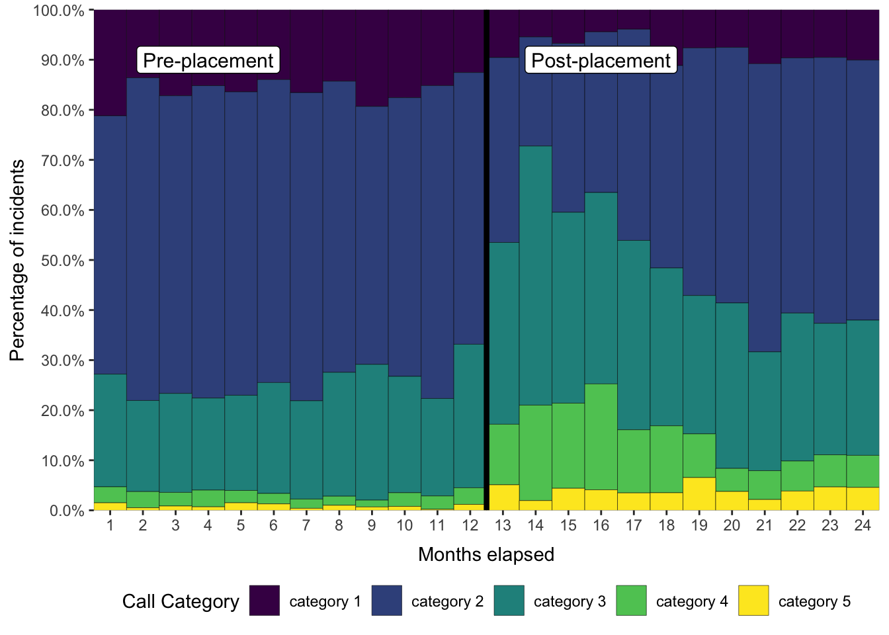
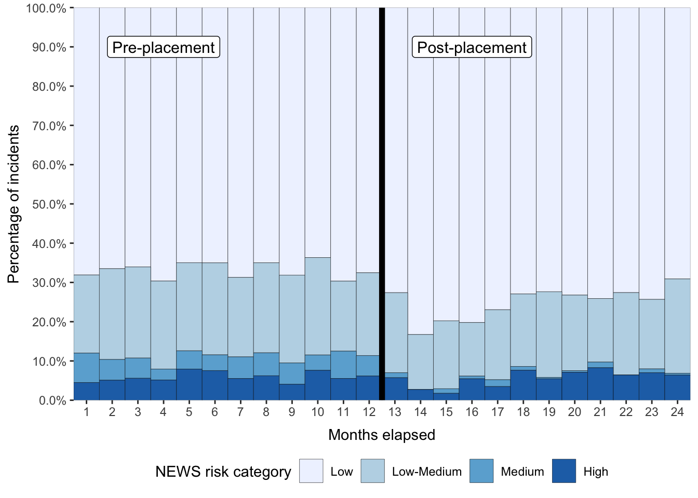

Supplementary 2
The following figures highlight the difference in triage call acuity (Figure 4) and NEWS risk category (Figure 5) pre- and post-placement, demonstrating the need for a control in the study design.

Figure 4: Call category pre- and post-placement

Figure 5: NEWS category pre- and post-placement